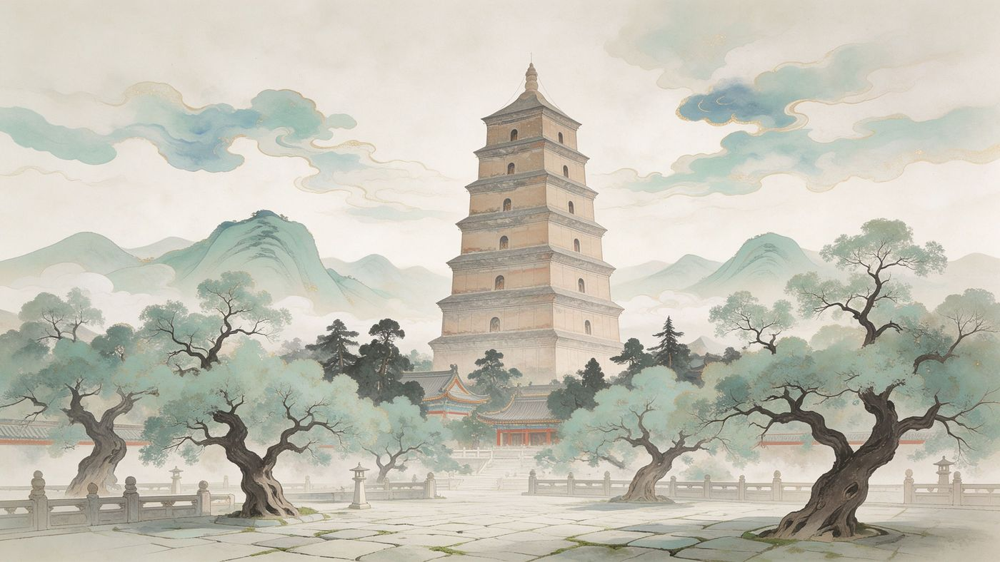
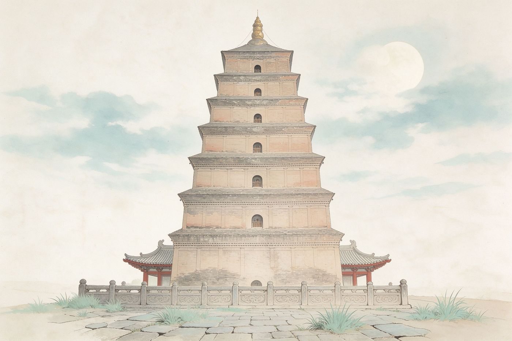
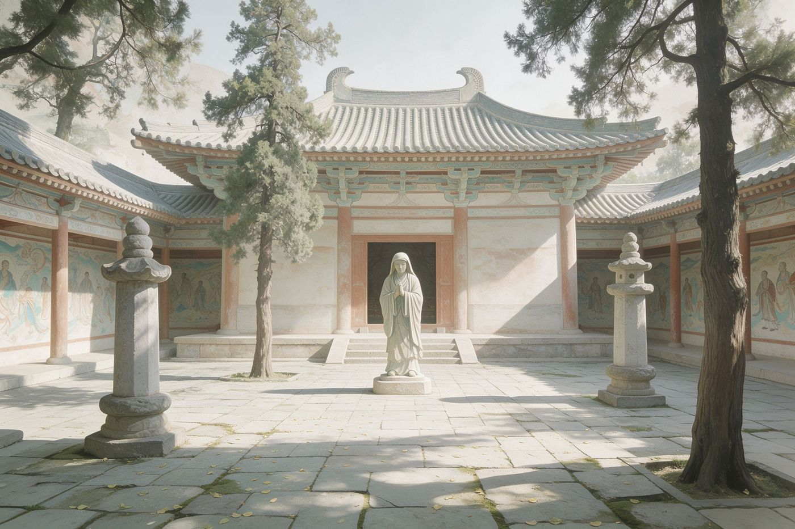
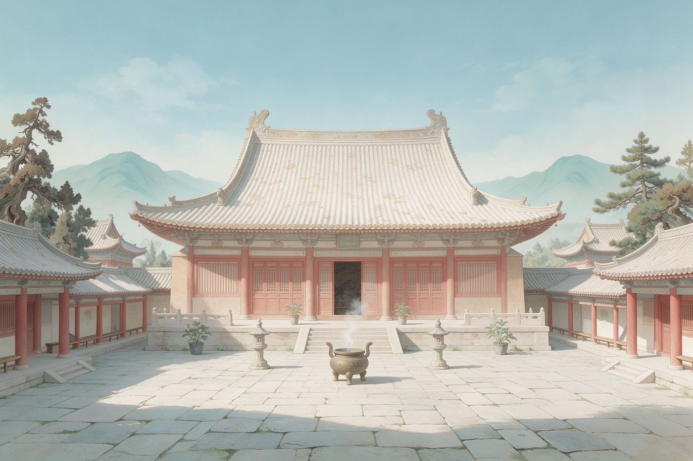
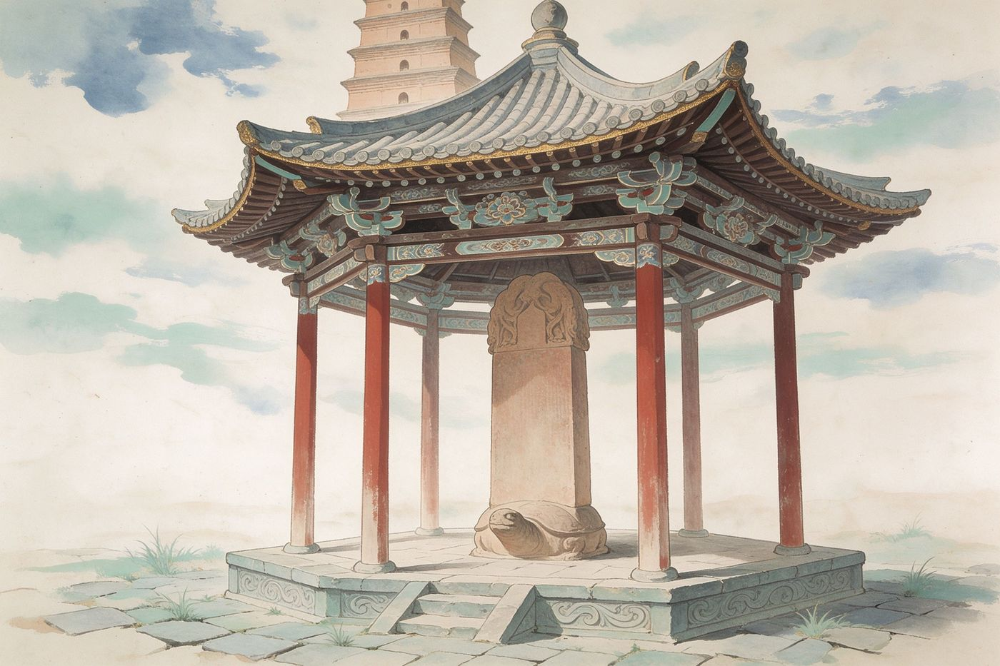
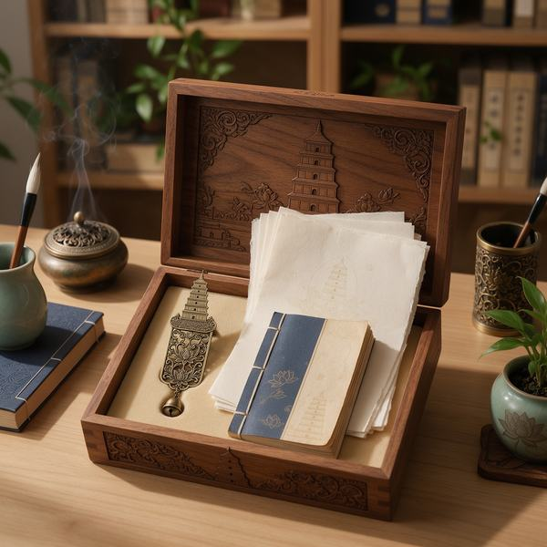

西安
大雁塔 · 大慈恩寺
玄奘藏经之塔 · 丝路佛缘与唯识宗祖庭
景点概览
大雁塔坐落于西安大慈恩寺内，又名慈恩寺塔。唐永徽三年（652）玄奘为保存由天竺取回的经像舍利，奏请于寺西院建塔，初为五层砖表土心；武周长安间重建为七层，明万历间包砖修葺成今貌，通高约六十四米。寺本太子李治追荐生母文德皇后所建，是玄奘主持译场与法相唯识宗祖庭；2014年作为丝绸之路遗产点列入世界文化遗产。
652年塔始建
七层砖塔现存形制
约64米通高
世遗·国保遗产属性
历史沿革
唐代营建
648年·贞观二十二年
大慈恩寺创建
太子李治为追荐生母文德皇后扩建寺院，玄奘入主寺务。
652年·永徽三年
玄奘奏建大雁塔
玄奘奏请造石浮图安置经像，高宗敕改用砖造，就西院建成五层。
701—704年·武周长安间
重建为七层
原砖表土心塔倾圮，武则天率王公集资重建为方锥形楼阁式砖塔。
历代修葺
930—933年·后唐长兴间
五代整修
西京留守安重霸重修大慈恩寺并整修大雁塔，维持唐代形制。
1556年·明嘉靖三十四年
关中大地震
八级强震，塔刹震落，塔下碑刻受损，塔身残破待修。
1573—1620年·明万历间
包砖成今貌
沿唐塔外形包砌磨砖对缝砖面，复安塔刹，形成今日七层外观。
现代文保
1961年
首批全国重点文保
国务院公布大雁塔为第一批全国重点文物保护单位。
2014年6月22日
列入世界文化遗产
作为「丝绸之路：长安—天山廊道的路网」遗产点列入《世界遗产名录》。
园区简化动线
寺院中轴
入寺
趋塔
三藏院
示意动线，非真实地理比例（归一化坐标，仅示游览先后）。
南广场 · 玄奘立像
入口
山门 · 天王殿
寺院入口
大雄宝殿
祖庭殿宇
大雁塔本体
核心遗址
玄奘三藏院
纪念区
必看亮点

核心地标大雁塔本体
方形七层楼阁式砖塔，砖仿木檐、风铎层叠，玄奘藏经之处。

玄奘纪念玄奘三藏院
塔北侧专馆，以壁画雕刻再现玄奘西行求法、归国译经一生。

唯识宗祖庭大慈恩寺殿宇
唐长安三大译场之一，玄奘在此主持译场、创法相唯识宗。

人文典故雁塔题名 · 圣教序碑
新进士雁塔题名盛事；塔下《圣教序》二碑记述玄奘西行。
史料引用
典籍《大唐大慈恩寺三藏法师传》
卷第七（唐·慧立、彦悰撰，CBETA T50n2053）
三年春三月，法师欲于寺端门之阳造石浮图，安置西域所将经像……「所营塔功大，恐难卒成，宜用砖造。」……于是用砖，仍改就西院。
永徽三年造塔始末与改砖、移建西院的一手记载。
典籍《旧唐书》
卷一百九十一·方伎·玄奘
正史载玄奘西行求法、归国译经与慈恩寺事；只列出处，未逐字征引。
近现代研究陕西省文物局复函
官方口径：始建永徽三年，武周长安间改建七层，明万历间包砖成今貌。
近现代研究人民网《大雁塔，丝路繁华的见证者》
2014年作为丝绸之路遗产点列入《世界遗产名录》。
近现代研究陕西省佛教协会《唯识宗祖庭大慈恩寺》
贞观二十二年太子李治创建慈恩寺，玄奘主持译场、创唯识宗。
到访信息
开放开放时段与登塔安排以大慈恩寺·大雁塔景区官方公示为准
门票寺院门票与登塔票分别售票，价格以景区官方公示为准
交通地铁3号线/4号线大雁塔站；雁塔区雁塔南路大慈恩寺
无关联剧场：点击 CTA 将 toast 提示「该景点数字剧场即将上线」
相关文创

玄奘像
¥89

城市盲盒
¥59

数字AR券
¥39